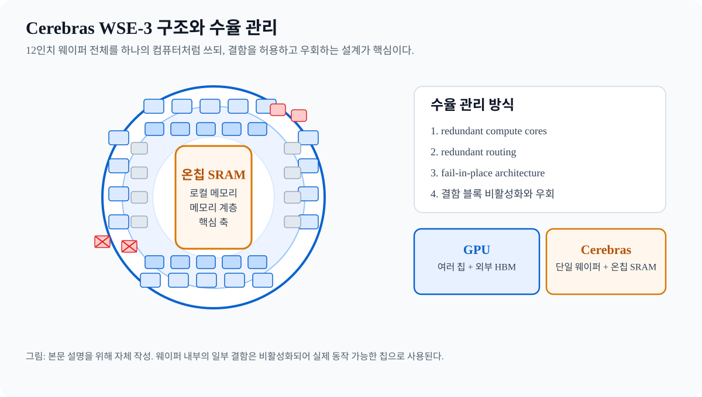

AI Chip Report · 2026-05-31
Cerebras 회사 이력, 규모 전망, 기술력 비교 리포트
wafer-scale computing을 상용화한 Cerebras를 기준으로 회사 이력, 성장 규모, WSE-3 구조, 수율 관리와 경쟁사 대비 포지션을 정리한다.

그림: 본문 설명을 위해 자체 작성. 12인치 웨이퍼 전체에 로직과 온칩 SRAM을 배치하고, 결함 블록은 우회한다.
핵심 결론
Cerebras는 GPU 대체를 직접 주장하는 회사가 아니라, AI 추론과 대형 모델 학습에서 분산 컴퓨팅 복잡성 자체를 줄이려는 wafer-scale 컴퓨팅 회사다. Andrew Feldman은 공동창업자이자 CEO이며, 과거 SeaMicro CEO 경력이 공개 자료로 확인된다.
회사 이력
| 시점 | 내용 | 의미 |
|---|---|---|
| 2015 | Andrew Feldman, Gary Lauterbach, Michael James, Sean Lie, Jean-Philippe Fricker가 창업 | wafer-scale computing 상용화 출발점 |
| 2019 | WSE-1, CS-1 출시 | 데이터센터 시장 진입 |
| 2021 | WSE-2, CS-2 출시 | 초대형 단일 칩 전략 현실화 |
| 2023 | G42와 Condor Galaxy 네트워크 발표 | 대형 슈퍼컴퓨팅 네트워크 구축 |
| 2024 | WSE-3, CS-3 출시 | 현 세대 성능 도약 |
| 2025~2026 | OpenAI, MBZUAI, AWS, G42 관련 확장 | inference 중심 성장 가속 |
규모 전망
SEC S-1 기준 Cerebras의 2025년 말 직원 수는 708명, 2025년 매출은 약 $509.991m로 2024년 대비 76% 증가했다. 다만 고객 집중도와 자본투입을 함께 봐야 하며, 회계상 이익과 실제 영업 현금흐름은 분리해 읽어야 한다.
기술력의 핵심
WSE-3는 12인치 웨이퍼 전체를 거의 하나의 컴퓨터처럼 쓰는 설계다. 공식 페이지 기준 46,225 mm², 4조 트랜지스터, 90만 코어, 125 petaflops를 내세우며, 로직과 온칩 SRAM이 함께 들어간다. 일반적인 GPU처럼 외부 HBM을 붙이는 구조와는 다르다.
수율 관리는 redundant compute cores, redundant routing, fail-in-place architecture로 처리한다. 즉, 완벽한 웨이퍼를 전제로 하지 않고 결함 블록을 비활성화하고 우회하는 방식이다.
비교표
| 회사 | 핵심 아키텍처 | 주력 워크로드 | 강점 | 약점/리스크 |
|---|---|---|---|---|
| Cerebras | Wafer-scale engine | 대형 학습, 고속 추론 | 분산 복잡성 축소 | 고객 집중도, 자본집약 |
| NVIDIA | 범용 GPU + 소프트웨어 생태계 | 학습, 추론, 로보틱스, 엣지 | 생태계와 범용성 | 가격과 공급 제약 |
| Groq | LPU | 초저지연 추론 | 예측 가능한 실행, 빠른 응답 | 학습보다는 추론 중심 |
| SambaNova | Dataflow RDU | 대형 추론, on-prem AI factory | 기업용 배포 용이성 | GPU 대비 생태계 제한 |
해석
Cerebras는 NVIDIA를 정면 대체하기보다, inference 병목이 심한 특정 구간의 대안으로 보는 것이 맞다. Groq는 초저지연 추론, SambaNova는 enterprise on-prem deployment에 더 가까운 포지션이다.